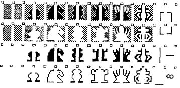
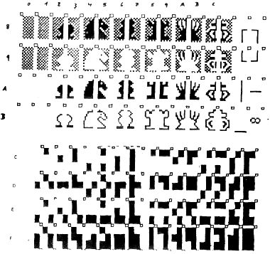
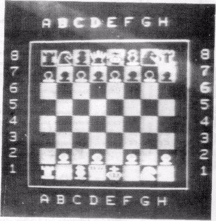

Nascom Journal |
2/81 |
Die im Heft 6/7 1980 vorgestellt Graphikkarte hat sich inzwischen zum „Renner“ entwickelt. Insbesondere zusammen mit dem Schach-Graphikrom gibt es tolle Möglichkeiten. So kann man alle Figuren auf dem Bildschirm in hochauflösender Graphik darstellen, die einem Computer der Spitzenklasse, wie z.B. dem Apple II in nichts nachsteht.
Die Graphik-Zusatzkarte läßt sich an jeden Nascom 1 anschließen. Alle erforderlichen Teile kosten als Bausatz DM 128 .– mit einer ausführlichen, deutschen Aufbauanleitung .
Mit der Graphik-Karte kann man nun die Schach-Graphik-ROMs laufen lassen oder sich selbst EPROMs mit eigenen Zeichen programmieren ! Das geht sowohl mit 1k EPROMs, als auch mit den 2k EPROMs. Die Schach-Graphikroms sind auch schon erhältlich:
Graphik-Zusatzrom (nur Schach) 78.–
(1k)
Dieses ROM hat folgenden Zeichenvorrat:

Graphik-Zusatzrom (SCHACH und SET-Funktion des 8k Microsoft-BASIC)
(2k) 98.–
Dieses ROM hat einen Zeichenvorrat von insgesamt 128 Zeichen und erlaubt damit einmal die Benutzung der Schachgraphik zum anderen kann die SET-Funktion des 8k BASIC wie gewohnt verwendet werden. Das 2k EPROM ist ein 2716 und kann auf den Graphik-ROM-Sockel des Nascom 2 gesteckt werden.
Es hat folgenden Zeichenvorrat:
Mit den passenden Schachprogrammen läßt sich, wie schon oben gesagt, eine tolle Graphik produzieren:
Die Preise sind:
Schachprogramm für
Nascom 1 oder
Nascom 2:
128.– (Version „G“, graphikfähig ).
— Graphik ROM nicht im Preis enthalten —
Schachprogramm ohne Graphik: 98.–
— Bei jeder Bestellung bitte Betriebssystem angeben !!! —
| Seite 15 von 20 |
|---|